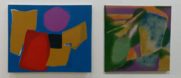
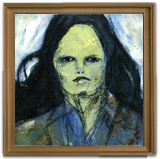
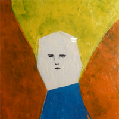

「AYUMI」
■メッセージ
今回、『自然』をテーマに制作した作品を展示します。
よろしくお願い致します。
■経歴
・2011年 馬車道大津ギャラリー《記録・イメージと言葉展》
・2012年 相原中央公園《畑田あゆ美展》
ギャラリー枝香庵《物語の中の主人公達展》
中美展入選
町田相原郵便局 《畑田あゆ美展》
・2013年 うめのえ画廊《畑田あゆ美展》
うめのえ画廊《グループ展》
25×25 HASHIMOTO ART PROJECT
仏具店日本堂にて水彩画を出品
＜その他の活動＞
・イベントのフェイスペイントデザイン担当
・看板デザイン
・旗のデザイン
・花壇活動
・フリーマーケットでのポストカード販売 等
・手描きをメインに活動しています。
■告知
浅草のギャラリーアビアントにて、７月１日～９日《うちわ＆ふうりん展》に作品(うちわ)を出しております。(http://abientot.main.jp/)

■掲載期間：７月１日～７月１５日

「308mas」
■メッセージ
肩ひも と ひと。
■経歴
成安造形大学イラストレーション科卒。
渋谷にてWEBデザイナーをしつつ絵を描いてます。
■Twitter
@lsntff
～ 肩ひも ～

■掲載期間：７月１日～７月１５日